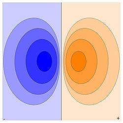

研究电偶极子的作用：将电偶极子作为电介质模型的基本元素
电偶极矩（也称电矩）：从负电荷-q到正电荷+q的距离矢量为d，则电偶极距表示为p=qd，p方向也从负电荷-q指向正电荷q，电偶极矩的物理意义是电荷系统的极性的一种衡量。
电位：
$$\varphi {\text{ = }}\frac{q}{{4\pi {\varepsilon _0}}}\left( {\frac{1}{{{r_{( + )}}}} - \frac{1}{{{r_{( - )}}}}} \right) = \frac{q}{{4\pi {\varepsilon _0}}}\left( {\frac{{{r_{( - )}} - {r_{( + )}}}}{{{r_{( + )}}{r_{( - )}}}}} \right)$$
对于电偶极子，有 $R \gg d$ ，因此（ $\overrightarrow R $ 为源点-电偶极子到场点的距离矢量）
$$\varphi {\text{ = }}\frac{{q\overrightarrow d \cdot \overrightarrow {{e_R}} }}{{4\pi {\varepsilon _0}{R^2}}} = \frac{{\overrightarrow p \cdot \overrightarrow {{e_R}} }}{{4\pi {\varepsilon _0}{R^2}}} = - \frac{1}{{4\pi {\varepsilon _0}}}\overrightarrow p \cdot \nabla \frac{1}{R}$$
$$\overrightarrow E = - \nabla \varphi = \frac{1}{{4\pi {\varepsilon _0}}}\nabla \left( {\overrightarrow p \cdot \nabla \frac{1}{R}} \right)$$
电极偶子的等值线图。等值曲面清楚地区分于图内。

分开有限距离的两个异性电荷的电场线。
电介质：没有自由电荷的物质（只有极化电荷），如云母等
导体：含有自由电荷的物质
极化电荷：电介质内部分布的电偶极子的另一种表述
极化强度：电偶极子偶极矩的密度，符号P
$$\overrightarrow P \Delta V = \sum\limits_{\Delta V} {\overrightarrow p } $$
$$d\varphi {\text{ = }}\frac{{\left( {\overrightarrow P dV} \right) \cdot \overrightarrow {{e_R}} }}{{4\pi {\varepsilon _0}{R^2}}} = \frac{{\overrightarrow P \cdot \overrightarrow {{e_R}} }}{{4\pi {\varepsilon _0}{R^2}}}dV$$
$$\varphi {\text{ = }}\iiint\limits_V {\frac{{\overrightarrow P \cdot \overrightarrow {{e_R}} }}{{4\pi {\varepsilon _0}{R^2}}}dV}$$
电介质内电偶极子产生的电场，看成是极化电荷产生的电场